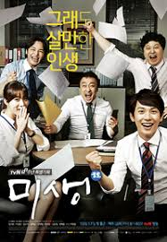

2.에피소드
드라마의 첫 시작은 주인공인 장그래가 이국 땅에서 누군가를 열심히 뒤쫓는 모습으로 뜬금없이 시작한다. 마치 액션영화의 한 장면 같은 모습이 끝난 뒤 진짜 이야기가 시작된다.
어릴 때부터 프로기사를 꿈꾸며 바둑만이 자신의 길이라고 생각한 주인공 장그래. 장그래는 어려운 집안 형편에 아르바이트를 전전하며 바둑을 간신히 계속 해나간다.
하지만 열심히 살아왔음에도 불구하고 장그래는 번번히 기원 입단에 실패한다. 그러던 중 아버지가 돌아가시게 되고 어머니는 몸져 눕게 되셔서 장그래는 바둑을 포기한다.
그리고 어머니 지인의 소개로 ‘원 인터네셔널[1]’에서 인턴을 하게 된다.
낙하산
장그래보다 먼저 들어온 안영이나 장백기 같은 동료 인턴은 팀내에서 인정 받고 있는 것에 비해, 고등학교 중퇴 검정고시 출신에, 무스펙인 낙하산 장그래를 보는 사내 시선은 따갑기만 하다.
장그래는 인정받고 싶은 답답함에 뭐든 열심히 하려 하지만, 복사 하나 못하는 그로써는 쉽지 않다.
밥을 먹으러 구내식당에 가서도 장그래는 혼자 두리번 거리는데, 그 모습을 본 장백기가 장그래를 불러 인턴들과 같이 밥을 먹기 시작한다.
밥을 먹다가 이상현이 장그래에게 어디 대학 출신이냐 묻게 되고, 장그래는 고등학교 중퇴 검정고시 출신 임을 말하게 된다.
갑분싸 인턴들은 좋은 대학 출신인 줄만 알았던 장그래가 검정고시 출신 임을 알게 되자 더더욱 장그래를 무시하고 기분 나빠한다.
인턴들의 뒷담화로 이를 알게된 장그래는 회사 어디에도 속하지 못하고 무능력한 자신을 한심하다 느낀다.
그동안 열심히 살아왔음에도 아직 성공하지 못했기에 자신은 열심히 산 것이 아니라고 위안하며 장그래는 회사에 적응하고자 노력한다.
그러던 중 해외 출장 중이었던 오상식 과장이 돌아오게 되는데, 김동식 대리의 실수로 오상식이 참여해야 하는 미팅 일정이 꼬이게 된다.
그러자 김동식은 장그래를 보내서 어떻게든 바이어를 잡아두라고 한다. 별다른 기대를 하지 않고 보냈지만, 예상외로 장그래는 오상식이 오기 전까지 바이어를 잘 케어하게 된다.
미팅 후 회사로 돌아가는 차 안에서 오상식은 장그래에게 회사에 들어오기 전에 뭘 했는지 묻지만, 장그래는 아무 것도 하지 않았다고 대답한다.
오상식은 자신의 팀에는 일을 할 사람이 필요하다며 장그래에게 본인의 장점을 어필해 보라고 한다.
이에 장그래는 노력이라고 답하지만, 오상식은... 안 사 임마 회사에 돌아와 오상식은 장그래에게 노력은 너무 흔해서 안 사는 거라고 말하지만, 장그래는 자신의 노력은 질과 양이 다르다고 반박한다.
이에 오상식은 너털 웃음을 지으며, 영업 3팀 아이템 관련 자료를 해당 폴더에 정리해서 옮기라고 숙제를 준다.
장그래는 바둑 자료를 모으던 자신의 옛날을 생각하며 새로 폴더를 만들어 정리하지만, 오상식은 장그래의 폴더 트리를 보며 혼자 쓴 일기 같다며 크게 기대하지 않았다고 말한다.
김동식의 전화로 오상식은 영업 3팀의 오징어 젓갈 원재료에 꼴뚜기가 섞인 것을 알게 되고, 각 팀에 양해를 구해 남자 인턴들을 모두 공장에 내려보낸다.
공장에 내려간 뒤 두 명씩 짝을 지어 꼴뚜기 색출 작업을 시작하게 되는데, 남자 인턴들이 장그래를 대놓고 따돌려서 장그래는 혼자 작업하게 된다.
혼자 작업하게 된 장그래는 뭐라도 보여줄 수 있겠다는 생각에 어머니가 사주신 새 양복까지 버려가며 열심히 작업한다.
그러던 중 전화가 오게 되는데 장그래는 휴대폰을 오징어 속에 빠뜨려 버리고 만다. 그 전화는 다름 아닌 오상식의 전화로, 중국 업체에서 꼴뚜기를 섞은 것을 시인해서 철수해도 좋다는 것이었고 이는 장백기에게 전달되게 된다.
그런데 철수 과정에서 이상현은 장그래를 약올리듯 작은 소리로 몇 번 철수하라고 말하고 장그래씨, 철수하래요. 전 말한겁니다. 그냥 돌아간다.
회사로 돌아가서 장백기는 장그래가 없는 걸 발견하고 이상현에게 짐짓 화난 척 하지만 이상현은 장백기가 모를 줄 알았냐며 의미심장한 말을 한다.
장백기는 은근히 장그래를 무시하고 괴롭힌 것이다 뒤늦게 장그래는 공장장에게 회사 사람들이 다 갔다고 전달받게 되고, 어쩌다가 왜 따로 떨어졌냐는 연민의 말을 듣게 된다.
장그래는 꾀죄죄한 몰골로 회사에서 퇴근하던 안영이와 만나서 인턴들 회식 장소에 가게 된다. 안영이는 걱정하며 진짜 갈거냐고 묻지만, 장그래는 끝을 보기 위해 회식 자리로 향한다.
그 자리에서 장그래는 냄새 난다는 둥 온갖 수모를 겪지만 회사로 돌아왔다는 보고를 하기 위해 오상식을 찾는다.
뒤늦게 외근 갔다 온 오상식은 장그래를 보고 놀라, 장그래에게 꼴이 왜그러냐 묻지만 장백기가 일이 조금 있었다고 얼버무린다.
장그래는 오상식에게 보고를 마쳤으니 회사에 들어가 맡기신 업무[5]를 하겠다고 하고, 오상식은 들어가서 밥을 먹든 그냥 집에 가라고 한다.
장그래는 이를 거절하고, 자신을 비웃는 인턴들을 뒤로한채 열심히 하지 않아서 세상에 버려졌다는 독백과 함께 회사로 돌어간다.